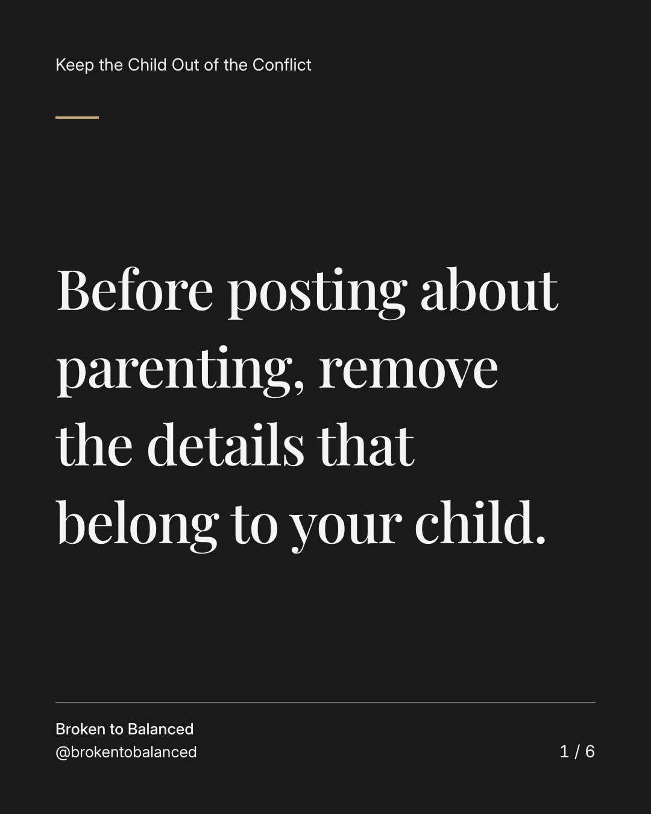
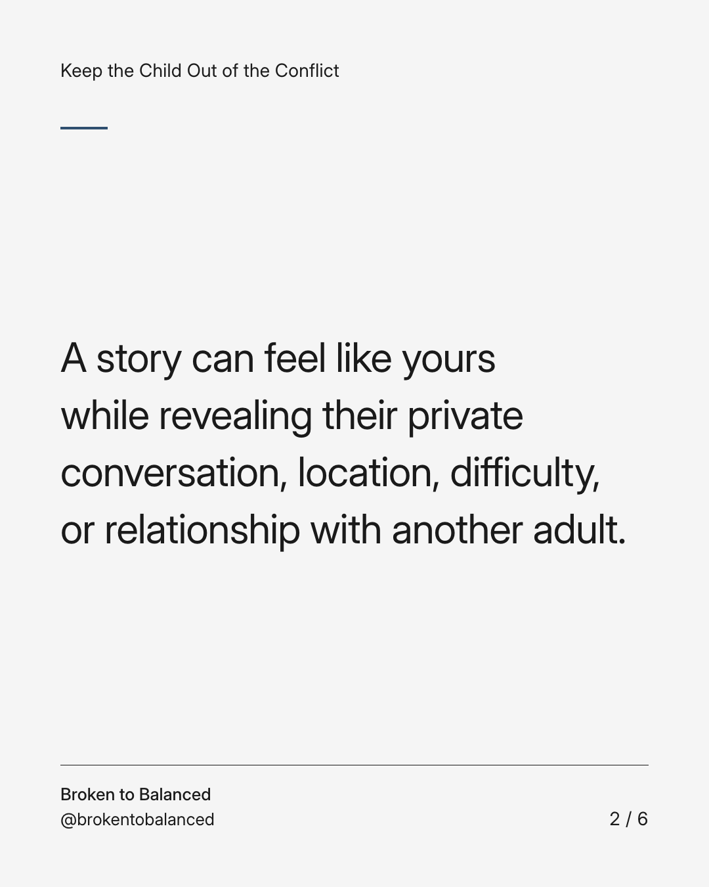
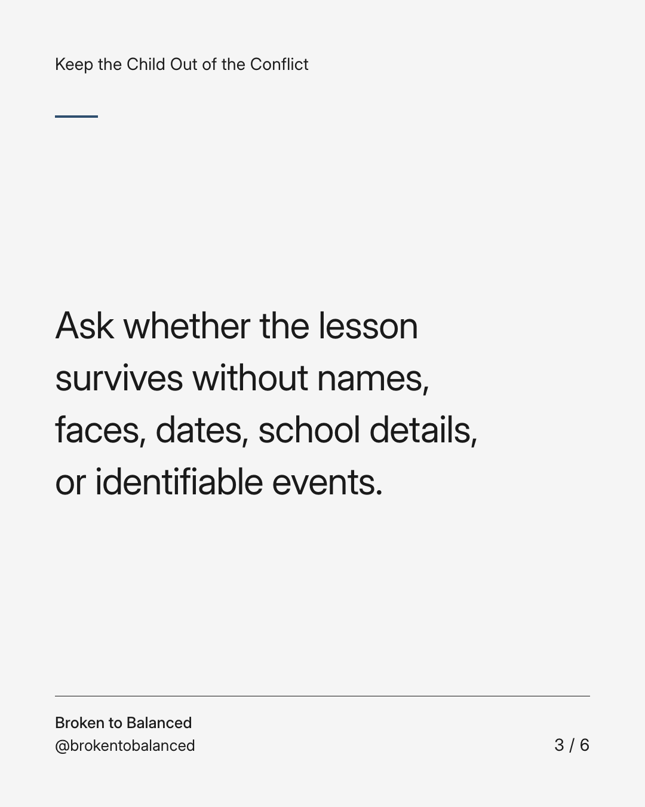
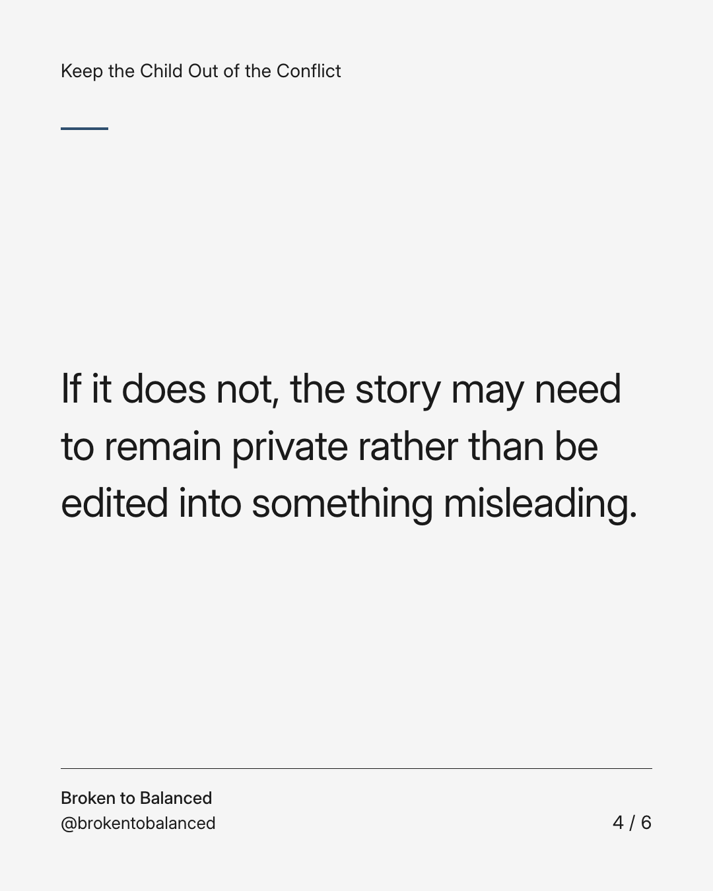
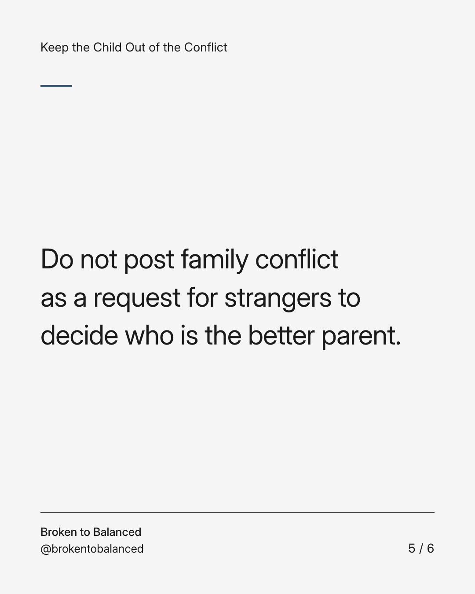
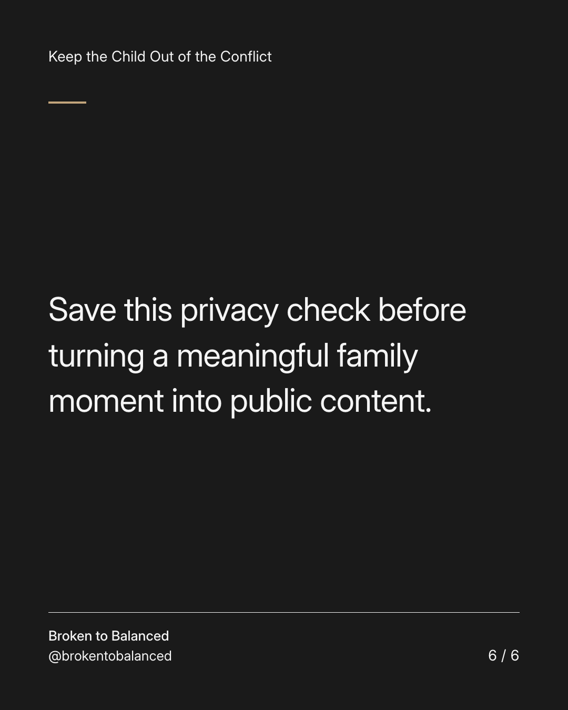

Exact text and accessibility text
Before posting about parenting, remove the details that belong to your child.
Slide 1 of 6. Before posting about parenting, remove the details that belong to your child.


Exact text and accessibility text
A story can feel like yours while revealing their private conversation, location, difficulty, or relationship with another adult.
Slide 2 of 6. A story can feel like yours while revealing their private conversation, location, difficulty, or relationship with another adult.


Exact text and accessibility text
Ask whether the lesson survives without names, faces, dates, school details, or identifiable events.
Slide 3 of 6. Ask whether the lesson survives without names, faces, dates, school details, or identifiable events.


Exact text and accessibility text
If it does not, the story may need to remain private rather than be edited into something misleading.
Slide 4 of 6. If it does not, the story may need to remain private rather than be edited into something misleading.


Exact text and accessibility text
Do not post family conflict as a request for strangers to decide who is the better parent.
Slide 5 of 6. Do not post family conflict as a request for strangers to decide who is the better parent.


Exact text and accessibility text
Save this privacy check before turning a meaningful family moment into public content.
Slide 6 of 6. Save this privacy check before turning a meaningful family moment into public content.
Exact caption
Plain-text fallback: select and copy the caption.